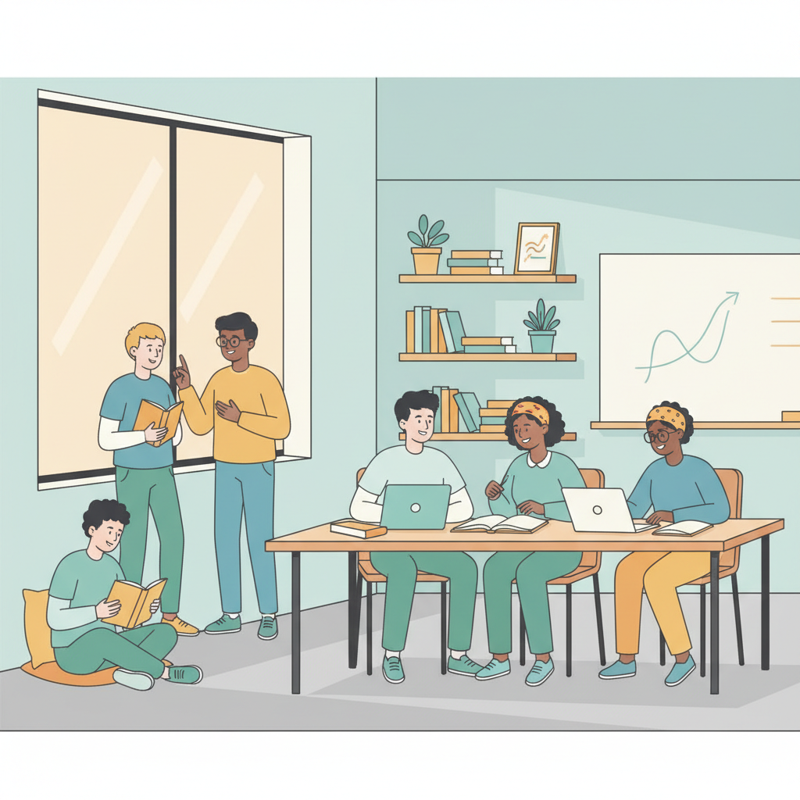

青少年学业倦怠水平评估
通过科学的问卷评估，了解您的学业状态，获得个性化的改善建议。所有数据仅用于个人参考，严格保护您的隐私。

欢迎参与学业倦怠评估
本问卷包含10道题目，涵盖注意力、疲劳程度、拖延情况、情绪状态等多个维度。 完成问卷大约需要5-10分钟，您将获得详细的结果分析和改善建议。
隐私声明：您的所有回答仅用于生成本次评估报告，数据将在本地存储，不会上传到服务器。
进度
1 / 10